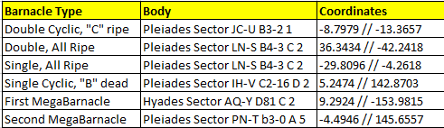
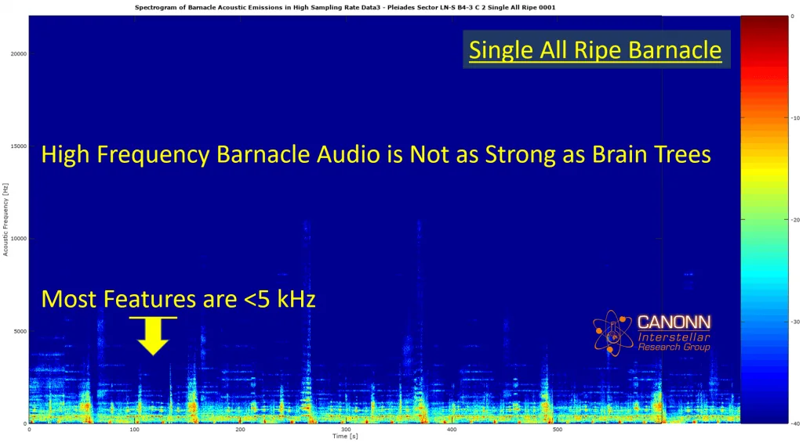
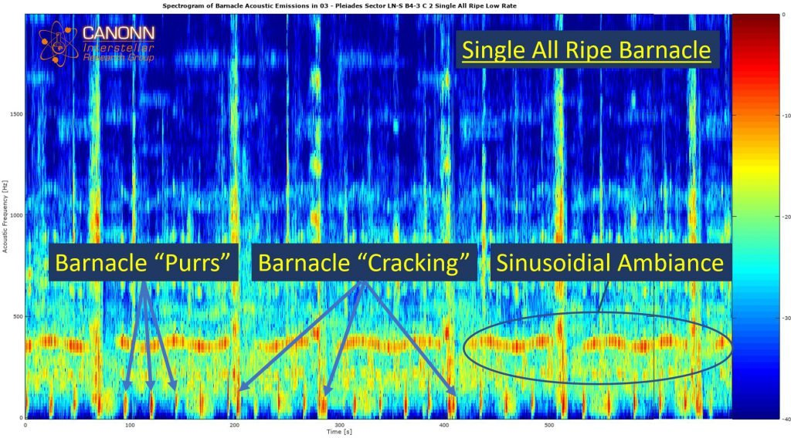
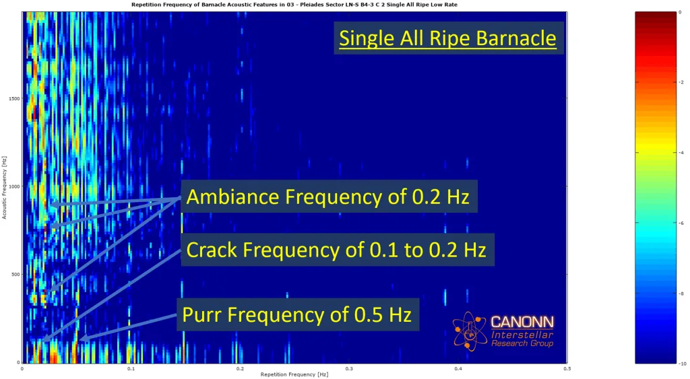
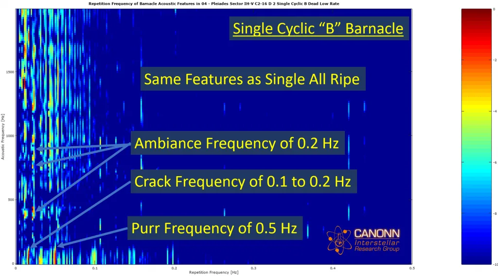
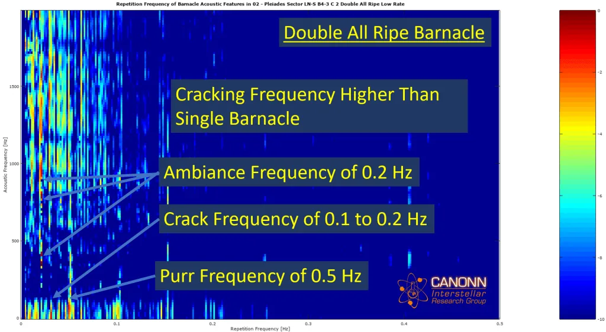
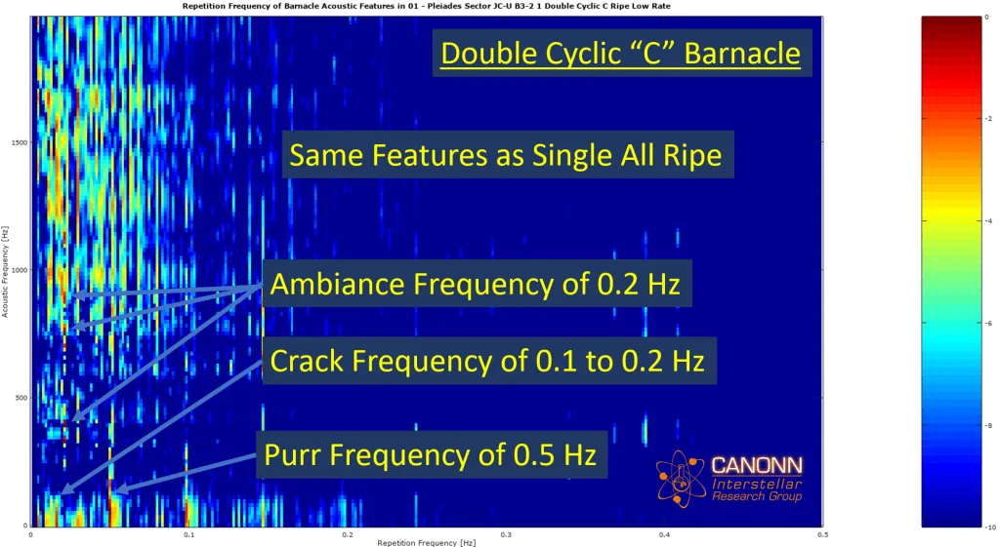
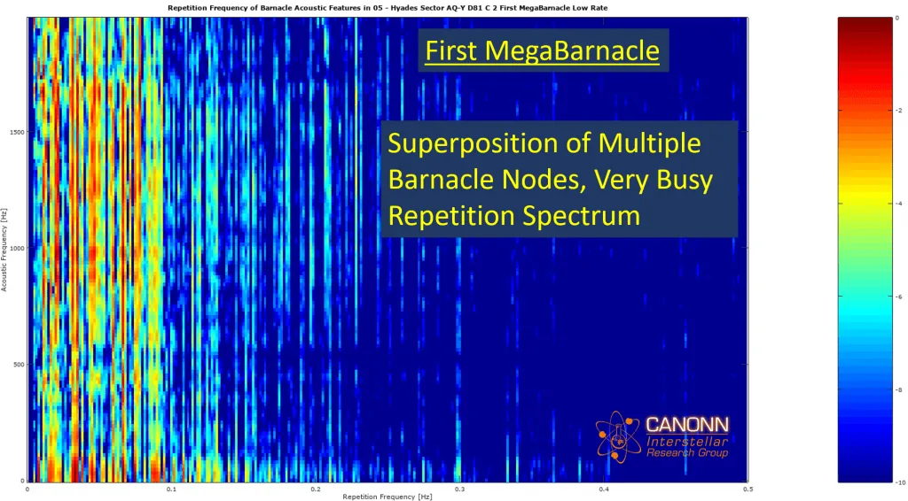
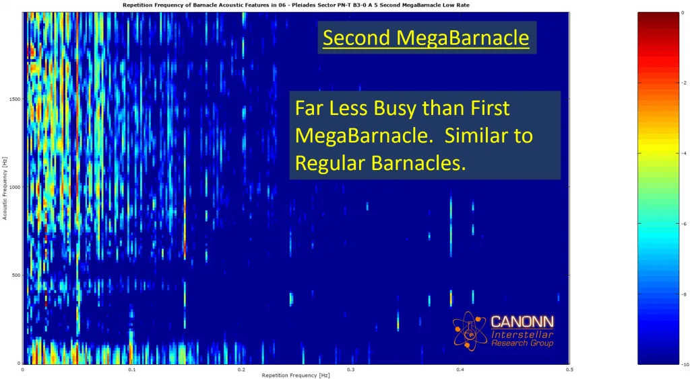

Barnacles [1] are among a series of organic formations found on airless celestial bodies that have been discovered in the last decade, the others being so-called Brain Trees [2] and Bark Mounds [3]. There are a number of mysteries associated with Barnacles, and in this study we will focus on the acoustic characteristics of the various Barnacle types.
The scope of this study is limited to analyzing the repetitive nature of the acoustic features in Barnacle sites. This study takes the same approach that was used to analyze the repetition frequency of acoustic features in Brain Tree sites [4]. The technical details behind the Fourier analysis can be found in the aforementioned Brain Tree paper and will be referenced here in its entirety.
In this initial study, we analyzed audio from 6 Barnacle sites that we feel are representative of each type of Barnacle: Double Cyclic, Double All Ripe, Single All Ripe, Single Cyclic, First MegaBarnacle (discovered by CMDR PanPiper), and Second MegaBarnacle (discovered by CMDR Robbie). The two MegaBarnacles were included because the first features Thargoid Scavengers and the Second One does not. They also have a different number of Barnacle nodes.
One hour of audio was recorded at each of the Barnacle sites listed below.

Audio data was recorded by placing the SRV next to the main Barnacle node. The wavescanner volume was set to mute. Data was first recorded at 44.1 kHz to characterize the high-frequency (i.e. greater than 10 kHz) portion of the signal. The majority of the results presented here come from data recorded at 8 kHz because (as will be explained in the next section) the salient acoustic features reside in the region below 4 kHz.
We will start by looking at the spectrogram of a Single All Ripe Barnacle site since it is intuitively the simplest case available to study. The first thing to note in the spectrogram below is that there are obvious repetitive acoustic features, most of which exist below 5 kHz. It also appears that the high-frequency component of the spectrogram is far lower in power compared to that of Brain Trees [4].

Since the most salient features appear at low frequency, we will restrict our analysis to frequencies less than 2 kHz, as shown in the spectrogram below. The most obvious features can be broken into three groups: 1) So-called “Purrs” that seem to be pervasive in technology associated with Thargoids, 2) “Cracking” sounds that feel like ground is being torn open, 3) ambient sounds that appear to have a sinusoidal repetition pattern. All of these are highlighted in the spectrogram.

The Purrs happen roughly every 20 seconds and come in two varieties. The two Purr types are interleaved, one happening after the other.\
The first Purr sounds as follows:
The second Purr sounds as follows:
Finally, here is a clip of the Cracking sound:
In order to get a better quantitative characterization of these acoustic features, we carry out Fourier analysis similar to that previously done for Brain Trees [4]. The figure below shows the repetition frequency of a Single All Ripe Barnacle site. The the acoustic frequency and repetition frequency of Purrs, Cracking sounds, and ambient sounds are highlighted in the figure. The Purr repetition frequency is rough 0.5 Hz, while the Cracking sounds have a repetition frequency between 0.1 and 0.2 Hz, which roughly corresponds to a ratio of 3 to 5 Cracking sounds per Purr. The sinusoidal ambient sounds occur almost exactly with a frequency of 0.2 Hz.

The next set of figures shows the acoustic feature repetition frequency for Single Cyclic, Double All Ripe, and Double Cyclic Barnacle sites, respectively. Single and Double Cyclic Barnacles have repetition frequencies very similar to that of Single All Ripe Barnacles. In the case of the Double All Ripe Barnacle site, the Cracking repetition frequency is noticeably higher (around 0.3 Hz) than the other types of sites.



We now turn to analyzing the corresponding repetition frequency of the first MegaBarnacle ever discovered. It should be noted that the SRV was placed next to the largest Barnacle node in the middle of the site. During the data acquisition experiment, it was noticed that Cracking sounds were quite persistent at the first MegaBarnacle site. The repetition frequency spectrum shown below is noticeably busier than that of regular Barnacle sites. The spectrum is so busy it is difficult to disentangle the various underlying features. Evidently, something is happening at the first MegaBarnacle site that is markedly different than regular sites. Perhaps the oft theorized underground “mining” activity is on overdrive at this site.

The second MegaBarnacle site every discovered, however, is not as busy as the first one. The repetition frequency spectrum is similar to regular sites. Perhaps this second MegaBarnacle has not yet evolved to the same level of maturity as the first one.

Fourier analysis has been carried out on the acoustic emissions from several types of Barnacle sites. The Purr repetition frequency is around 0.5 Hz, the Cracking sounds have a frequency of 0.1-0.3 Hz, and the salient ambient sounds have a repetition frequency of 0.2 Hz. The first MegaBarnacle site stands out from the other types of sites in that Cracking sounds are pervasive.
The repetition frequency of the aforementioned acoustic features does not seem to correlate to other known quantities of the host celestial bodies. The high-acoustic frequency component of Barnacle sites is comparatively lower in power than that of Brain Trees.
This analysis serves as a baseline for future studies. We will repeat this study in the future to see if the repetition frequencies change with time and location.
References
[1] Canonn Research, “Barnacles”, https://canonn.science/codex/large-barnacles
[2] CMDR Starbeaver, “Guardians Trees (Brain Trees)”, https://canonn.science/codex/guardians-trees-brain-trees/
[3] CMDR Scott, “Mic Turner Base”, https://canonn.science/codex/mic-turner-base/
[4] CMDR Maligno, “Brain Tree Phenomenology Part 2: Analysis of Acoustic Features”, https://canonn.science/codex/brain-tree-phenomenology-part-2-analysis-of-acoustic-features/